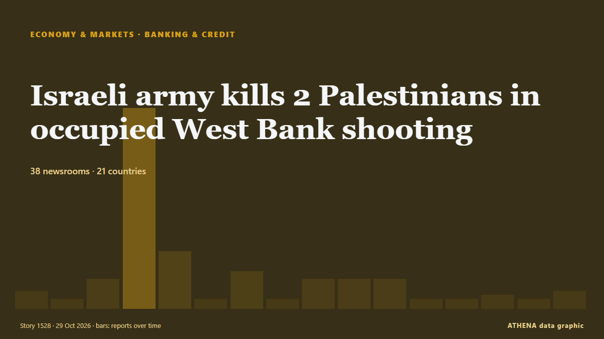

Οικονομία
Η παγκόσμια οικονομία σήμερα
Τελευταίο 24ωρο — γεγονότα: 68, χώρες: 44. Υψηλότερος κίνδυνος τώρα: 6.1 — Paraguay opposition seeks president’s removal over banking crisis.

Οικονομία & ΑγορέςIsraeli army kills 2 Palestinians in occupied West Bank shooting
West Bank: Palestinian youth injured, settlers attack cars, steal olive harvest A Palestinian youth suffered injury to the head due to a live-fire shrapnel during a raid by the Israeli military in… από Middle East Eye
| 23 Οκτ | 11 |
|---|---|
| 24 Οκτ | 2 |
| 25 Οκτ | 12 |
| 26 Οκτ | 50 |
| 27 Οκτ | 42 |
| 28 Οκτ | 47 |
| 29 Οκτ | 47 |
| 30 Οκτ | 52 |
| 31 Οκτ | 20 |
| 1 Νοε | 22 |
| 2 Νοε | 56 |
| 3 Νοε | 53 |
| 4 Νοε | 33 |
| 5 Νοε | 10 |
Παρακολούθηση
Τελευταία
Israel kills Palestinian in Gaza, seizes eight homes in occupied West Bank
Israeli attacks target several areas of Gaza as Palestinian authorities report new homes and more than 620 acres of land near Ramallah seizures in occupied West Bank. από TRT World
US Fed holds interest rates steady despite 'too high' inflation
The US Federal Reserve is expected to keep interest rates unchanged in its upcoming meeting next week. από Times of India
Jordan's king says 'no security or stability' in region without Palestinian homelan
Jordan’s King Abdullah II on Monday said there would be no security in the Middle East region until the Palestinians’ right to a homeland is fulfilled. από Hespress English
Disney plans thousands of layoffs as managers asked to cut costs by 20%
California: Walt Disney is considering cutting thousands of jobs as the entertainment giant seeks to reduce costs, with some managers asked to identify annual savings of 20 per cent, Bloomberg… από Gulf News
Fed holds main interest rate steady despite accelerating inflation
Two policymakers on the Federal Open Market Committee dissented in favor of raising the federal funds rate by 0.25 percentage point. από Supply Chain Dive
French bank Credit Mutuel Arkea counting losses from cyberattack
France’s Credit Mutuel Arkea said on Wednesday it was trying to recover funds stolen in “fraudulent… από BusinessWorld
Shadab heroics lift Pakistan past England
Pakistan all-rounder Shadab Khan struck an unbeaten 113 and shared a record 89-run last-wicket stand with Haris Rauf as the hosts rallied from 154-9 to secure a one-wicket win... από Oman Observer
California Billionaire Tax Appears Headed For Failure
California voters are weighing Prop. 40, a one-time billionaire tax that has Silicon Valley executives funding campaigns and weighing their options. από Business Insider
Australia hikes rates to 18-year high to fight inflation
The Reserve Bank of Australia's decision was in line with expectations from economists polled by Reuters, and marked its fifth rate increase this year. από CNBC World
City searching for signals as Bank of England set to hike interest rates
City traders are searching for any signs the Bank of England could move faster in hiking interest rates in the coming months with policymakers widely expected to tighten monetary policy on Thursday . από City A.M.
African players in Europe: Jackson brace ends City’s perfect record
AFP Sport highlights African headline-makers in the major European leagues last week. από Free Malaysia Today
Sinner to play in Six Kings Slam in Riyadh at end of December - report
(ANSA) - ROME, 26 OTT - Jannik Sinner will make his comeback from a long layoff with a knee injury at the end of December at the Six Kings Slam event in Riyadh, Saudi Arabia, Supertennis, the TV… από ANSA English